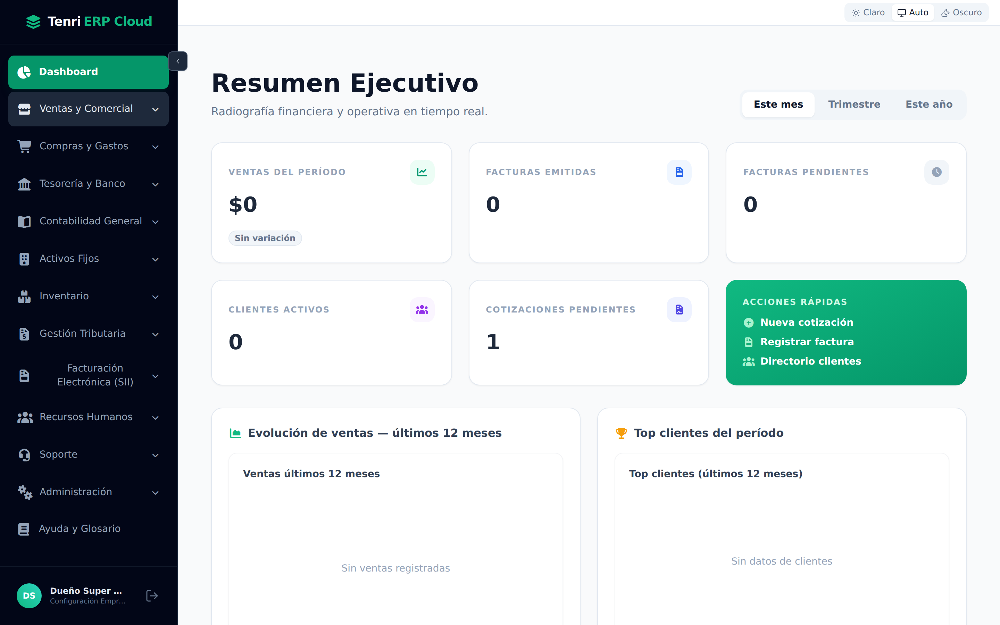
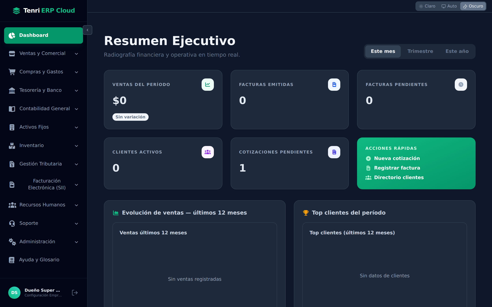
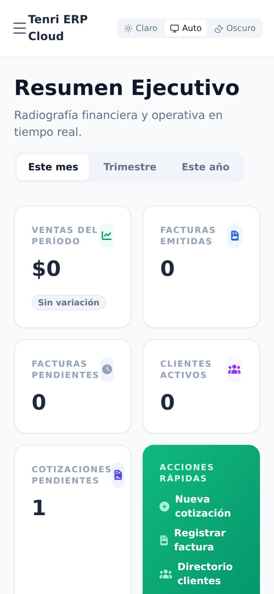
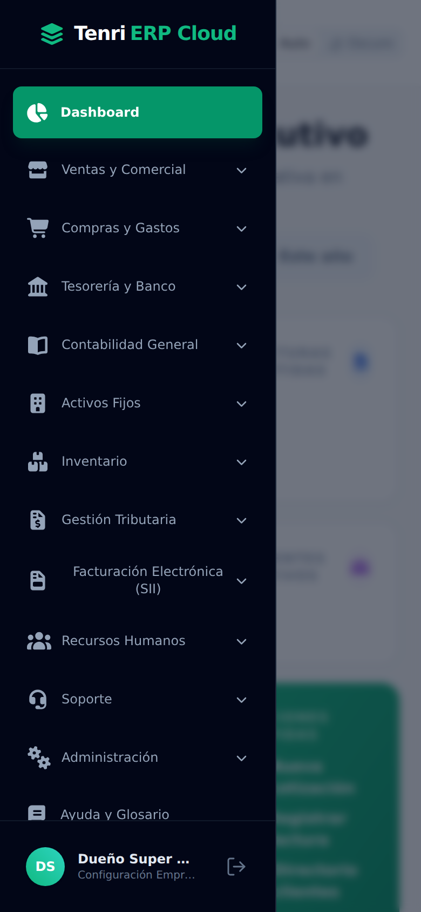

Tenri ERP Cloud
Manual de usuario · 01
El escritorio:
layout y barra lateral
Cómo está organizada la pantalla de Tenri ERP Cloud: navegación, cabecera, temas, avisos del sistema y uso en computador y celular.

Cómo está organizada la pantalla de Tenri ERP Cloud: navegación, cabecera, temas, avisos del sistema y uso en computador y celular.
La pantalla se divide en tres zonas de trabajo.
A · Barra lateral (izquierda, azul oscuro): el menú principal, da acceso a todos los módulos. B · Cabecera (arriba a la derecha): el selector de tema. C · Área de trabajo (centro): el contenido del módulo seleccionado.
La barra agrupa el sistema en bloques de trabajo, de arriba hacia abajo.
| Módulo | Para qué sirve |
|---|---|
| Dashboard | Resumen ejecutivo: ventas, facturas, clientes y cotizaciones. |
| Ventas y Comercial | Clientes y cotizaciones. |
| Compras y Gastos | Proveedores, facturas de compra y honorarios. |
| Tesorería y Banco | Cuentas, cartola, conciliación y nómina de pagos. |
| Contabilidad General | Plan de cuentas, libro mayor, asientos y cierres. |
| Activos Fijos | Registro y depreciación de activos. |
| Inventario | Bodegas, stock, picking/packing y despachos. |
| Gestión Tributaria | F29, Renta, Declaraciones Juradas y Libro CV. |
| Facturación Electrónica (SII) | Certificado, folios CAF y emisión de DTE. |
| Recursos Humanos | Empleados, contratos, liquidaciones, LRE y Previred. |
| Soporte | Tickets de ayuda. |
| Administración | Usuarios, roles y protección de datos (DPO). |
| Ayuda y Glosario | Definiciones y ayuda del sistema. |
Tenri ERP Cloud aplica seguridad por rol: cada usuario solo ve y opera los módulos que le corresponden. La barra lateral se adapta automáticamente a esos permisos, manteniendo la información sensible protegida.
Los bloques con una flecha (⌄) contienen sub‑opciones. Al hacer clic sobre el nombre del bloque, este se despliega. Por ejemplo, Ventas y Comercial abre Directorio de Clientes, Nueva Cotización y Gestión de Cotizaciones. Para cerrarlo, vuelva a hacer clic sobre el nombre.
Para ganar espacio de trabajo, use el botón ‹ junto a Dashboard: la barra se contrae y deja solo los íconos. Pase el cursor sobre un ícono para identificar el módulo; presione › para expandirla de nuevo.

En la cabecera, el selector de tema ofrece tres opciones.
Claro — fondo blanco (predeterminado). Auto — sigue la preferencia del sistema operativo. Oscuro — ideal para ambientes con poca luz. La preferencia queda guardada en su navegador.

La primera vez que ingresa, aparece un aviso de Política de Privacidad (Ley 21.719) en la parte inferior. Es un aviso no bloqueante: puede seguir trabajando aunque no lo acepte de inmediato.
Al pie de la barra lateral se muestra una tarjeta con su nombre y un acceso a la configuración de la empresa, junto al botón Cerrar sesión (ícono de salida →). Use ese botón para salir de forma segura.
En pantallas pequeñas la barra lateral se oculta. La cabecera muestra el botón de menú ☰ a la izquierda y el selector de tema a la derecha. Toque ☰ para abrir el menú como un cajón lateral; toque fuera o elija una opción para cerrarlo. Las tarjetas y tablas se reorganizan solas para verse bien en el celular.


Ya conoce cómo está organizada la pantalla de Tenri ERP Cloud. Estos son los tres pilares de la navegación:
La barra lateral agrupa el sistema por áreas de negocio; despliegue o contraiga lo que necesite.
Cambie entre tema claro, automático u oscuro desde la cabecera. La preferencia se recuerda.
En el celular el menú se vuelve un cajón lateral y el contenido se reorganiza solo.